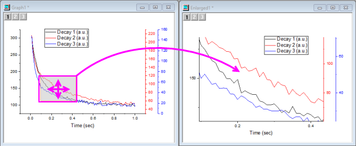
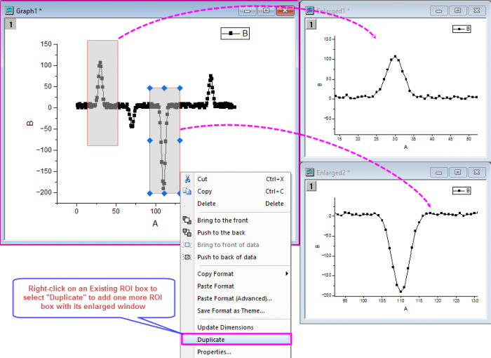
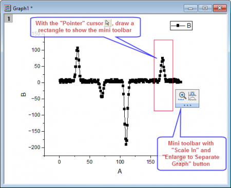

Einen Teilbereich des Diagramms vergrößern
Zoom-Portion-of-Graph
Origin bietet eine Anzahl von Hilfsmitteln und Methoden zum Zoomen oder Schwenken in Ihrem Diagramm. Zwei Methoden von besonderem Interesse vergrößern einen Teilbereich Ihres 2D-Diagramms und senden ihn an ein zweites Diagramm:
- Origins Vergrößertes Diagramm erstellt eine interaktive Grafik mit zwei Feldern, in der ein verschiebbarer, in der Größe veränderlicher "Interessensbereich" im ersten Feld als vergrößerte Ansicht in einem zweiten Feld erzeugt wird.
- Sie können die Schaltfläche Achsenskalierung vergrößern
 verwenden, um einen vergrößerten Teil Ihres 2D-Diagramms in ein neues Fenster zu kopieren. Dies funktioniert auch für Grafiken, die mehrere verknüpfte Layer haben, solange die Layer sich überschneiden und eine gemeinsame Achse teilen (für % des verknüpften Layers ist Links/Oben auf 0 gesetzt und Breite/Höhe ist auf 100 gesetzt plus Gerade (1 zu 1) ist mit dem Hauptlayer verknüpft).
verwenden, um einen vergrößerten Teil Ihres 2D-Diagramms in ein neues Fenster zu kopieren. Dies funktioniert auch für Grafiken, die mehrere verknüpfte Layer haben, solange die Layer sich überschneiden und eine gemeinsame Achse teilen (für % des verknüpften Layers ist Links/Oben auf 0 gesetzt und Breite/Höhe ist auf 100 gesetzt plus Gerade (1 zu 1) ist mit dem Hauptlayer verknüpft).
- Drücken Sie bei aktiver Grafik die Strg-Taste und klicken Sie dann auf die Schaltfläche Achsenskalierung vergrößern (Symbolleiste Hilfsmittel). Ziehen Sie auf Ihrem 2D-Diagramm ein Rechteck (ROI-Feld) auf.
- Beachten Sie, dass dieses vergrößerte Diagramm dynamisch ist. Verschieben Sie das Rechteck auf Ihrem ursprünglichen Diagramm oder verändern Sie seine Größe. Das vergrößerte Diagramm wird aktualisiert.
- Um das Rechteck aus Ihrem ursprünglichen Diagramm zu entfernen und gleichzeitig das vergrößerte Diagrammfenster zu löschen, markieren Sie das Rechteck und drücken Sie die Taste Entfernen.
- 
-
Hinweis: Sie dürfen mehrere ROI-Felder zum Diagramm hinzufügen. Es werden dann mehrere vergrößerte Diagrammfenster gezeigt, um in diese ROI-Bereiche zu zoomen.
- 
- Sie verwenden die Schaltfläche der Minisymbolleiste, um in die Bereiche zu zoomen.
- 
Zusätzliche Informationen
- Weitere Informationen zum Zoomen, Schwenken und Skalieren Ihres Diagramms finden Sie auf dieser Seite.
- Eine Übersicht der Tastenkombinationen zum Zoomen, Schwenken und Neuskalieren der Diagramme finden Sie unter Zoomen, Schwenken oder Neuskalieren im Origin-Handbuch.